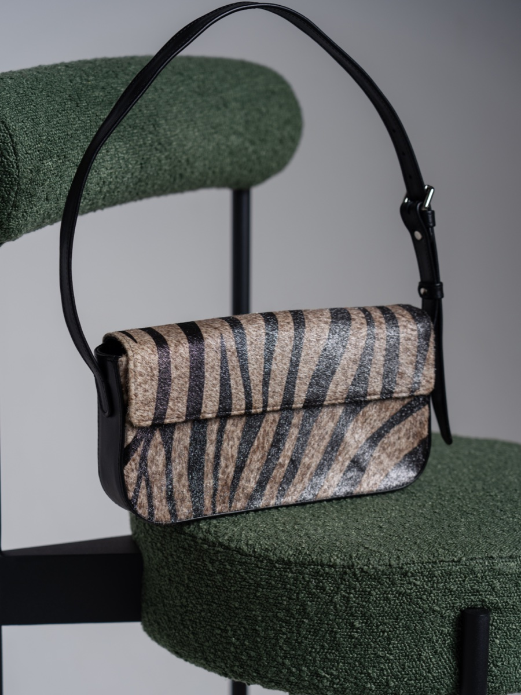
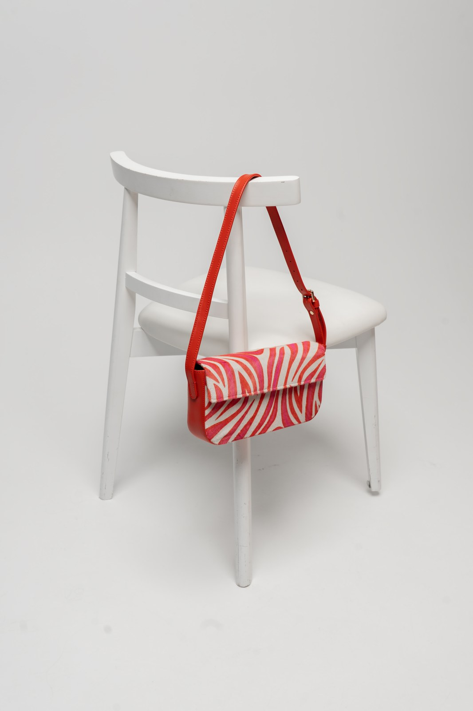

Chrono-Elastic Video Scrub (Хроно-Еластичний Скраб)
Відео поводиться як натягнута гума або еластична шкіра.
При швидкому скролі відеоряд прискорюється, але коли користувач відпускає палець, кадр з м'якою інерцією повертається до найгарнішого ключового моменту (Hero Keyframe) з ефектом відскоку.
"Відчуття пружності, наче граєшся зі справжньою натягнутою шкіряною смугою."
Slit-Scan Velocity Ribbon (Стрічка Швидкісного Сканування)
Верхня частина відео живе на 2 секунди в майбутньому, а нижня — в минулому.
Вертикальна лінія сканування розмиває рух моделі у витончену рідку хвилю, створюючи сюрреалістичну скульптуру з кроків і помахів сумочки.
"Гіпнотичний арт-ефект кутюрного показу, де кожен кадр стає футуристичною картиною."

Doppler Optical Zoom (Оптичний Допплер-Зум)
При наближенні до відео колірний спектр зміщується в теплі коньячні тони, а звук стає глибшим.
Імітація ефекту Допплера: скрол до об'єкта додає золотого теплого зміщення (Redshift), а віддалення охолоджує кадр до сталевого антрациту.
"Фізичне відчуття швидкості зближення з річчю."

Bilateral Echo Trails (Світлові Примарні Шлейфи)
Рух моделі залишає напівпрозорі фантомні відбитки попередніх 5 секунд.
Попередні позиції сумки зависають у повітрі золотими голографічними силуетами, демонструючи геометрію траєкторії руху.
"Ефект розкішної витримки модної фотосесії просто всередині живого відео."

Gyro-Locked Camera Pivot (Гіроскопічна Стабілізація Орбіти)
Нахил телефону буквально обертає ракурс камери навколо моделі у 4K відео.
Використання нейромережевої інтерполяції ракурсів (NeRF/Gaussian Splatting) для зміщення кута огляду відеоряду на 30 градусів слідом за гіроскопом смартфона.
"Ніби тримаєш у руках кришталеву кулю, всередині якої йде жива людина."

Acoustic Scrubbing Scratch (Сенсорний Аудіо-Скратч)
Звук відео мікро-модулюється швидкістю руху вашого пальця.
Рух пальцем по екрану вперед відтворює звук швидше, назад — уповільнює з характерним аналоговим розтягуванням плівки (Tape Stop / Vinyl Scratch).
"Повний тактильний контроль над часом, наче ви DJ кінематографу."

Focus-Pull Parallax Scrub (Фокус-Подорож у Глибину)
Скрол не крутить час, а переводить фокус від деталей карабіна до очей моделі.
Покадрова карта глибини (Depth Map) динамічно розмиває передній або задній план за алгоритмом фізичної оптичної діафрагми f/1.2.
"Погляд кінооператора за 50 000 доларів у вас під кінчиками пальців."


Kinetic Pause-Fracture (Кінетичний Стоп-Кадр Розпаду)
При паузі відео об'єкт у кадрі розпадається на складові лекала з тонкої шкіри.
Зупинка відео відокремлює сумку в просторовий шар, показуючи її викрійку у підвішеному стані з золотими розмірними лініями.
"Магія перетворення готового модного аксесуара на креслення кутюр'є."

Multi-Temporal Matrix Quadrant (Квадрант 4 Вимірів Часу)
Екран розділений на 4 сектори, де те саме відео йде зі зсувом у 0.5s, 1s, 2s.
Переміщення курсора зміщує точку фокусу між секторами, створюючи поліфонічний візуальний калейдоскоп руху.
"Гіпер-динаміка та перегляд усіх фаз руху одночасно."

Magnetic Center-Lock Tracking (Магнітне Захоплення Об'єкта)
Сумка залишається нерухомою в центрі екрана, тоді як світ навколо неї шалено обертається.
AI-стабілізація навколо золотого логотипа замка: модель рухається, фон летить, а логотип не зрушується ні на міліметр.
"Гіпнотичний фокус на виробі, від якого неможливо відвести погляд."
Subsurface Leather Glow (Підшкірне Розсіювання Світла)
При дотику фотографія підсвічується зсередини, наче ви приклали ліхтарик до тильного боку шкіри.
Симуляція субповерхневого розсіювання (Subsurface Scattering): натуральна шкіра пропускає м'яке бурштинове сяйво крізь пори.
"Тепло і жива органіка матеріалу — відчуття, що шкіра 'дихає'."

Acoustic Grain Friction (Акустичне Тертя Зерна)
Швидкість руху курсора по фотогенерує частоту шелесту натурального зерна.
Web Audio генерує мікро-шум зернистості (Pink Noise Filtered) у точній синхронізації зі швидкістю миші.
"Ви пальцями відчуваєте різницю між гладкою наппою та шорстким кінським ворсом Cavallino."

Pressure-Sensitive Indentation (Вдавлювання за Силою Натиску)
Сильне натискання на екран продавлює поверхню шкіри під пальцем.
Нормалі світла на фото зміщуються у точці кліку, створюючи тривимірну лунку з м'якими тінями еластичної деформації.
"Ніби ви торкнулися пальцем м'якої набивки авторської сумки."

Thermal Heatmap Touch (Тепловий Відбиток Долоні)
Місце дотику тимчасово світлішає від тепла людського тіла.
Шкіра на фото змінює відтінок з темного шоколаду на теплий карамельний і повільно остигає протягом 3 секунд.
"Особистий інтимний контакт із річчю ще до покупки."

Tension Vector Seam Stress (Карта Напруження Вощеного Шва)
Потягніть за куток фотографії, щоб побачити як натягуються стібки.
Шов візуалізує лінії натягу силовими золотими нитками, демонструючи міцність сідлового шва ручної роботи.
"Залізна впевненість у довговічності виробу."

Hair Follicle Wind-Breeze (Подих Вітру по Ворсу Cavallino)
Рух курсора нахиляє окремі волоски хутра поні в бік подиху вітру.
Шейдер розчісування волосків реагує на вектор швидкості миші, залишаючи сліди, як від проведення рукою по оксамиту.
"Непереборне бажання гладити екран без зупинки."

Specular Metal Flake Glisten (Мікро-Бліки Золотої Фурнітури)
Мікроскопічні вкраплення латуні спалахують окремими зоряними іскрами при русі смартфона.
Шорсткість металу (Micro-roughness) розраховується з урахуванням кута падіння віртуального світла від курсора.
"Справжнє сяйво відполірованого вручну золотого карабіна."

Water Droplet Beading & Roll (Скочування Краплі Роси)
Клікніть на фото — з'являється крапля води, яка скочується з водовідштовхувального покриття шкіри.
Фізика поверхневого натягу: крапля заломлює текстуру шкіри як мікро-лінза і стікає під кутом нахилу телефону.
"Наочна демонстрація вологозахисту ексклюзивних восків."
Weight Gravity Tilt (Гравітаційне Провисання Ременя)
Нахиліть екран — і шкіряний плечовий ремінь розгойдується під власною вагою.
Фізичний симулятор ланцюга Верле (Verlet Integration) рахує вагу шкіри та латунного замка.
"Відчуття важкості та благородної маси преміального аксесуара."
Tactile Edge Burnish Bevel (Опуклий Зріз Урізу)
Краї сумки на фото виглядають округлими і блискучими, немов покриті італійською фарбою для урізів Fenice.
Нормальне освітлення торців реагує на рух світла, підкреслюючи бездоганне ручне полірування краю.
"Захоплення ювелірною точністю майстрині Олени Горщар."
Molten 24K Gold Viscosity Wave (Хвиля Розплавленого Золота)
Шкіра розчиняється у густій хвилі рідкого золота і збирається знову.
Рівняння Нав'є-Стокса на GLSL шейдері деформують пікселі, перетворюючи поверхню виробу на рідке золото найвищої проби.
"Чистий візуальний кайф текучого благородного металу."
Ferrofluid Spiked Attraction (Ферофлюїдні Магнітні Голки)
При наведенні магніту курсора шкіра піднімається гострими чорними голками, як феромагнітна рідина.
Високоточний шейдер висот зміщує геометрію вздовж вектора напруженості уявного магнітного поля.
"Футуристичний містичний контакт із матеріалом нового тисячоліття."
Cognac Honey Surface Tension (Поверхневий Натяг Медового Коньяку)
Повільні важкі хвилі кольору витриманого коньяку, що застигають на краях фотографії.
Висока в'язкість (Reynolds < 10): хвилі рухаються плавно, затухаючи з м'яким оптичним заломленням.
"Теплота, глибина та смак преміального коньячного дублення шкіри."
Acoustic Cymatic Vibrations (Кіматичні Хвилі Хладні)
Звук музики утворює на поверхні шкіри сакральні геометричні піщані візерунки.
Частотний аналіз звукової доріжки модулює хвильові інтерференційні вузли на полотні зображення.
"Матеріалізація звуку через текстуру шкіри."
Mercury Mirror Disruption (Ртутна Дзеркальна Ряб)
Глянцева поверхня шкіри відбиває світ навколо, а клік розбиває це дзеркало на круглі ртутні кульки.
Краплі збігаються назад за законом поверхневого натягу з характерним металевим тремтінням.
"Ефект рідкого термінатора T-1000 у світі високої моди."
Silk Drape Wind Cascade (Шовковий Каскадний Брижі)
Скрол здуває поверхню фотографії м'якою шовковою хвилею, оголюючи наступний кадр.
Cloth simulation у реальному часі на WebGL: геометрія полотна гнеться під подихом курсора.
"Ніжність та легкість вишуканого драпування синьої шкіри."
Radial Shockwave Ripple Burst (Радіальний Ударний Сплеск)
Швидкий клік по замку створює потужну концентричну хвилю деформації по всьому екрану.
Хвиля хроматичної аберації (RGB Split) біжить від центру до країв, заломлюючи навколишній простір.
"Кінетична енергія надійної застібки."
Deep Sea Pressure Distortion (Глибинна Підводна Дисторсія)
Сумка здається зануреною на глибину сапфірового океану з лінивими світловими каустиками.
Voronoi каустичний шейдер відтворює сонячні промені, що танцюють на дні під водою.
"Медитативне відчуття прохолоди та преміального спокою."
Boiling Pigment Micro-Vortex (Мікро-Вихори Фарби)
При наведенні пігмент шкіри починає крутитися крихітними кольоровими вихорами.
Particle advection симулює змішування натуральних барвників під час фарбування у барабані.
"Занурення в таємницю народження унікального авторського кольору."
Elastic Membrane Snapback (Еластичний Відскок Мембрани)
Потягніть мишкою середину сумки, як батут, і відпустіть — вона затремтить і вирівняється.
Згасаючі гармонійні коливання (Damped Harmonic Oscillator) з фізичним коефіцієнтом пружності шкіри.
"Абсолютна тактильна впевненість у формостійкості виробу."
Waxed Thread Unravel Transition (Розплітання Вощеної Нитки)
Фотографія розпадається на єдину безперервну золоту нитку, яка сплітається у нове фото.
Всі контури зображення перетворюються на сплайн нитки, яка натягується і вишиває наступний кадр.
"Магічний зв'язок між ручною роботою голкою і сучасним кодом."
Origami Leather Pattern Unfold (Розгортання Лекал Орігамі)
Сумка на фото розкривається у плоске креслення лекал, повертається і складається у нову модель.
Паперово-шкіряна 3D орігамі-анімація з реалістичними складками і лініями біговки.
"Академічна краса конструкторської школи КНУТД."
Prism Glass Shatter & Reassembly (Кришталевий Розпад і Збирання)
Кадр вибухає на сотні трикутних кришталевих призм з райдужними відблисками.
Діаграма Вороного розбиває поверхню на осколки, які залітають углиб екрана і збирають наступну сумку.
"Ювелірний блиск дорогоцінного каміння та преміальної фурнітури."
Dimensional Fabric Tear (Просторовий Розрив Тканини)
Шорний ніж розтинає екран навпіл, і крізь розріз виринає наступне відео.
Краї розриву скручуються природною шкіряною бахромою зі звуком розрізання щільного полотна.
"Драматичний, сміливий жест високої моди."
Magnetic Particle Cloud Recluster (Хмара Магнітних Пікселів)
Зображення розчиняється у 100 000 золотих пилинок, які вихором шикуються у новий силует.
GPU Particle System з векторним полем тяжіння до контурів наступного об'єкта.
"Космічне народження виробу із зіркового пилу."
Thermal Laser Cut Outline (Лазерний Розкрій Світлом)
Розпечений промінь світла обводить контур виробу з іскрами та димком, відкриваючи новий план.
Світіння країв різу (Glow & Bloom) та фізична емісія іскор із гравітацією.
"Ультраточний технологічний розкрій на фабриці майбутнього."
Cylinder Baril Axial Roll (Осьове Обертання Багета)
Екран скручується в циліндричний тубус форми Baril і провертається навколо своєї осі.
3D Mesh Transformation: плоска площина згортається в трубку і показує інший бік життя бренду.
"Геніальна рима з фірмовою формою сумок EGO Cylindre."
Curtain Draw With Solid Brass Hardware (Шторний Зсув на Латунних Кільцях)
Тягніть за латунне кільце, щоб зсунути фотографію, як важку театральну портьєру.
Фізичний маятник із характерним брязкотом важких металевих кілець по штанзі.
"Аристократичний жест відкриття куліс приватного салону."
Golden Stamp Imprint Punch-Through (Пробиття Золотим Штампом)
Масивний золотий герб EL вдаряє в екран, пробиваючи старе зображення наскрізь.
Екран тріскається золотими тріщинами Kintsugi і відкриває нову галерею.
"Незламна міць та авторитет бренду."
Liquid Droplet Merge & Split (Злиття та Розпад Крапель)
Два фото зближуються і зливаються в одне, немов дві краплі ртуті (Metaballs).
Signed Distance Fields (SDF) рендеринг органічного злиття двох поверхонь.
"Природна органічність без жодного штучного кута."
Circadian Daylight Shift (Циркадний Сонячний Цикл)
Фотографії на сайті змінюють освітлення залежно від реального часу доби за вікном користувача.
Вранці — ніжне східне сонце, вдень — яскраве студійне світло, ввечері — теплий золотий закат, вночі — таємничий неон.
"Сайт живе в одному ритмі з вашим днем."
Heartbeat Pulse Resonator (Пульсація Серцебиття)
Фонове світло навколо сумки м'яко пульсує з ритмом здорового спокійного людського серця (60 bpm).
Органічний синусоїдальний пульс освітлення знижує тривожність і вводить у стан естетичного трансу.
"Глибокий психологічний затишок та емоційне занурення."
Audio-Reactive Bass Bloom (Спалах Басу у Фурнітурі)
Кожен удар бочки у фоновому треку змушує золоті деталі спалахувати теплим світлом.
Web Audio Analyser виділяє низькі частоти (40-100 Hz) і передає їх у яскравість шейдера.
"Ви бачите музику очима на поверхні металу."
Weather Atmospheric Overlay (Погода за Вікном Клієнта)
Якщо в Києві йде дощ — на склі поверх фото з'являються краплі; якщо сонце — грають промені.
Підключення до відкритого API погоди створює локальний контекст перебування.
"Унікальне відчуття близькості та персонального зв'язку."
Scroll Inertia Velocity Stretch (Кінетичне Розтягування від Скролу)
Чим швидше ви скролите, тим сильніше фото вигинається у бік руху, підкреслюючи швидкість.
Dynamic Skew & Stretch на CSS transforms розраховується з першої похідної від scrollY.
"Відчуття неймовірної швидкості та плавності інтерфейсу спорткара."
Micro-Dust & Atelier Motes (Пилинки Світла у Променях Майстерні)
У повітрі перед фотографією ліниво кружляють золотисті мікро-частинки пилу у світлі сонця.
Броунівський рух 60 частинок, які реагують на подих курсора і розлітаються від миші.
"Ностальгічне відчуття справжньої теплої майстерні ремісника."
Adaptive Contrast Eye Comfort (Адаптація до Втоми Очей)
Чим довше людина розглядає фотографію, тим м'якшим стає контраст і яскравішими деталі в тінях.
Таймер затримки погляду плавно розкриває динамічний діапазон (Tone Mapping HDR).
"Турбота про зір і можливість розгледіти кожну дрібницю без напруження."
Dynamic Color Harmony Extract (Гармонійний Аудитор Кольору)
Фон навколо фотографії адаптується до домінантного відтінку шкіри обраної моделі.
Кольоровий аналіз k-means підбирає контрастний аристократичний тон для бездоганного сприйняття.
"Кожен виріб отримує власну персональну сцену та освітлення."
Grounded Shadow Dynamic Projection (Динамічна Тінь під Кутом Сонця)
Тінь від сумки на підлозі витягується і повертається слідом за положенням вашого курсора.
Soft shadow projection matrix з розмиттям залежно від відстані до віртуальної підлоги.
"Виріб стоїть прямо у вашій кімнаті як відчутний фізичний об'єкт."
Generative Patina Simulator (Генератор Патини за Роками)
Повзунок 'Через 10 років': показує, як шкіра рослинного дублення набуває шляхетного темного глянцю.
Шейдер патинування враховує місця тертя ручок, кути та природне потемніння на сонці.
"Розуміння, що ця сумка з роками ставатиме лише красивішою та дорожчою."
Skeletal X-Ray Internal Wireframe (Рентген Каркаса та Підкладки)
Увімкніть режим рентгена: шкіра стає прозорою, оголюючи внутрішні магніти, підкладку та кишені.
Двошаровий рендер із маскою відсікання показує інженерні таємниці міцності сумки.
"Захоплення тим, наскільки ідеально виріб зроблений не лише ззовні, а й зсередини."
Cross-Section Slicing Plane (Площина Анатомічного Розрізу)
Повзунок зрізає шари сумки міліметр за міліметром: обличчя шкіри, ущільнювач, підкладка, потайний шов.
Clip plane шейдер демонструє багатошаровий сендвіч конструкції вищого ґатунку.
"Наукове підтвердження бездоганної якості матеріалів."
Tensile Stress Strain Gauge (Карта Фізичних Навантажень)
Показує кольоровими ізолініями (FEA Analysis), які точки ручок витримують навантаження до 25 кг.
Кольоровий градієнт від синього до червоного візуалізує запас міцності конструкції.
"Впевненість, що ручки ніколи не відірвуться навіть під час активних подорожей."
Thread Tension Micron Gauge (Мікрометр Натягу Стібка)
Збільште стібок у 100 разів і побачите точний кут нахилу голки 45 градусів (French Pricking Iron).
Макрозйомка надвисокої роздільності з масштабною мікрометричною лінійкою.
"Доказ ручної праці, яку не зможе повторити жоден конвеєрний верстат у світі."
Hide Anatomy Topography (Топографія Шкури Бика)
Показує, з якої саме частини шкури (вороток, чепрак чи пола) вирізана кожна деталь конкретної сумки.
Інтерактивна схема шкури підсвічує найщільніший чепрак для корпусу та м'яку наппу для ручок.
"Розуміння глибоких академічних знань Олени Горщар із КНУТД."
Leather Thickness Caliper (Інтерактивний Електронний Штангенциркуль)
При наведенні штангенциркуль вимірює товщину шкіри у реальному часі: '1.42 mm • Full Grain'.
Анімований інструмент із точними вимірами для кожної конструктивної деталі.
"Абсолютна чесність та прозорість технічних характеристик."
Hardware Magnet Polar Attraction (Полярне Магнітне Захоплення)
Візуалізація невидимих магнітних силових ліній навколо прихованих замків сумки.
Векторне поле вигинається при наближенні клапана, пояснюючи фірмовий 'магічний клік'.
"Розуміння ергономіки: чому сумка закривається сама, варто лише опустити клапан."
Sub-Micron Python Scale Flex (Гнучкість Лусочок Пітона)
При вигині сумки окремі лусочки натурального пітона піднімаються на мікрони, як живі.
Шейдер зсуву лусочок відповідно до радіуса вигину геометрії корпусу.
"Дика, первозданна краса справжньої екзотичної шкіри найвищого рангу."
Edge Dressing Multi-Layer Peel (Шари Захисного Воску Урізу)
Показує всі 6 шарів шліфування, ґрунтування та запікання гарячим праскою урізу сумки.
Покрокова інфографіка перетворює торець шкіри на витвір мистецтва.
"Усвідомлення того, скільки годин праці вкладено в кожен квадратний сантиметр."
Authenticity UV Micro-Watermark (Ультрафіолетова Експертиза)
Перемкніть світло на ультрафіолет 365nm, щоб побачити приховану люмінесцентну печатку авторського сертифіката.
UV шейдер проявляє флуоресцентний монограмний підпис Олени Горщар.
"Захищеність банкноти найвищого номіналу."
Binaural Leather Squeak (Бінауральний Шкіряний Скрип)
Повертайте сумку у просторі — звук характерного шкіряного скрипу переміщається між вашим лівим та правим вухом.
Web Audio Panner Node 3D симулює точне положення джерела звуку в просторі навушників.
"Ілюзія того, що ви тримаєте нову пружну шкіряну сумку прямо біля свого обличчя."
Zipper Glissando Melody (Мелодія Блискавки YKK Excella)
Проведіть пальцем по блискавці на фото: кожен відполірований зубець видає дзвінкий чистий тон.
Синтез серії мікро-клацань із підвищенням висоти тону при прискоренні руху.
"Задоволення від бездоганного ковзання відполірованих вручну зубців."
Heavy Brass Clasp Clack (Масивний Удар Важкої Латуні)
Клацання замка звучить не як дешева жерсть, а як замок банківського сейфа або двері Rolls-Royce.
Низькочастотний резонансний імпульс (80-250 Hz) з довгим теплим післязвуччям латуні.
"Відчуття колосальної цінності та ваги кожної металевої деталі."
Pony Fur Stroking Whisper (Шепіт Погладжування Ворсу)
Ледь чутний ніжний шелест тисяч волосків Cavallino при русі курсора по текстурі.
Рожевий шум із вузькосмуговим резонансним фільтром, модульованим швидкістю миші.
"Миттєве зняття стресу, приємні мурашки по шкірі."
Awl Piercing Leather Pop (Пружний Хрускіт Проколювання Шилом)
Звук, із яким гостре ромбовидне шило майстрині пробиває 4 шари дубленої шкіри.
Акустичний семпл справжнього проколювання з характерним глухим хлопом виходу леза.
"Ефект безпосередньої присутності поруч з Оленою за її робочим столом."
Wax Thread Tension Snap (Дзвін Натягнутої Вощеної Нитки)
Коли майстриня затягує стібок, навощена нитка бринить, як басова струна віолончелі.
Фізичний моделюючий синтез струни (Karplus-Strong algorithm) генерує звук затяжки вузла.
"Відчуття музикальності та гармонії в кожному стібку."
Wooden Mallet Studio Thump (Глухий Стукіт Дерев'яної Киянки)
Рівний, заспокійливий стукіт важкого дерев'яного молотка по пробійниках висічки.
Ритмічний метроном майстерні, який задає гіпнотичний темп перегляду колекцій.
"Медитативне відчуття спокійної, неспішної та зосередженої роботи."
Box Unboxing Tissue Paper Rustle (Шелест Шовкового Паперу Тіш'ю)
При відкритті картки товару звучить ніжний шелест розгортання брендованого паперу пакування.
Високочастотний текстурний аудіо-тригер, прив'язаний до анімації появи картки.
"Ейфорія передчуття свята та отримання жаданого подарунка."
Hot Wax Sizzle Embers (Шипіння Гарячого Воску на Урізі)
Звук гарячої праски, що плавить натуральний бджолиний віск на зрізі ременя.
Потріскування і тихе шипіння пари від розігрітого воску створюють відчуття тепла.
"Запах меду, воску та гарячої шкіри виникає у пам'яті сам по собі."
Purse Snap Resonance Tail (Благородний Відгомін Магніту)
Клацання замка породжує тонкий кришталевий відгомін у просторі приміщення високого палацу.
Convolution Reverb із завантаженим імпульсом відбиття від мармурової зали Лувру.
"Статус та велич бренду світового класу."
Gyro Parallax Floating Depth (Шестишаровий Гіро-Паралакс)
Повертайте телефон у руках: фоновий подіум, модель, сумка та фурнітура рухаються на різній глибині.
6 ізольованих шарів глибини (Depth Slicing) реагують на нахил смартфона (DeviceOrientation).
"Повне відчуття, що ви дивитесь крізь віконце в реальний живий простір."
Volumetric Light Shaft Caustics (Об'ємні Промені Крізь Вітраж)
Світло падає на сумку крізь віртуальні аркові вікна майстерні, утворюючи пилові сонячні стовпи.
Raymarching волюметричного світла з генерацією м'яких тіней від силуету сумки.
"Атмосфера італійського палаццо або собору епохи Відродження."
Anamorphic Perspective Illusion (Анаморфна Ілюзія Вильоту з Екрана)
Під певним кутом нахилу здається, що ручка сумки виступає на 5 сантиметрів вперед перед склом екрана.
Анаморфна проекція з відсіканням фону та штучною тінню, що падає на рамку браузера.
"Шок глядача: хочеться простягнути руку і взяти сумку за ручку."
Fresnel Rim Reflection Shimmer (Френелівське Сяйво Силуету)
По краях силуету сумки біжить тонкий промінь золотого відблиску, окреслюючи витончену форму.
Шейдер Френеля (Fresnel Reflectance) робить краї яскравішими під гострим кутом зору.
"Витончений гламурний акцент на архітектурному крої виробу."
Lenticular Flip Picture Illusion (Лентикулярне Переливання двох Кадрів)
При нахилі вліво — сумка в закритому стані; при нахилі вправо — миттєво відкривається.
Імітація растрової лінзи (Lenticular Lens), де кут погляду вибирає чергування смуг зображення.
"Ностальгія за магічними стерео-листівками в супер-сучасному цифровому виконанні."
Chromatic Dispersion Rainbow Prism (Хроматична Райдужна Дисперсія)
Полірована поверхня золотого логотипа розщеплює біле світло на спектральні райдужні промені.
Фізичний розрахунок показника заломлення для різних довжин хвиль (RGB Refraction Index).
"Чиста розкіш ювелірного діамантового сяйва."
Tilt-Shift Miniature Diorama (Ефект Мініатюрної Діорами)
Сумка виглядає як крихітна коштовна мініатюра в руках невидимого гіганта.
Селективне градієнтне розмиття верхнього і нижнього планів створює оптичну глибину макрозйомки.
"Зворушлива ідеалізація кожної дрібної деталі."
Mirror Floor Reflection Ripple (Відбиття у Полірованому Базальті)
Під сумкою розстеляється бездоганно полірована підлога з чорного мармуру з м'яким віддзеркаленням.
Screen Space Reflections (SSR) з легким затуханням і шорсткістю поверхні підлоги.
"Рівень експозиції найдорожчих бутіків Мілана та Парижа."
Solar Lens Flare Occlusion (Затьмарення Сонячного Зайчика)
Коли кут сумки перекриває сонце на задньому плані, сонячний зайчик реалістично тьмяніє та спалахує знову.
Ray-traced сонячна корона з оптичними кільцями об'єктива anamorphic Cooke Look.
"Кінематографічна велич голлівудського фільму про високу моду."
Polarized Sunglasses Filter (Поляризаційний Фільтр Погляду)
Кнопка 'Polaroid': знімає всі відблиски, дозволяючи зазирнути у найглибшу фактуру та колір шкіри.
Зменшення відсотка дифузного бліку з підвищенням насиченості базового альбедо кольору.
"Погляд професійного колориста та оцінювача шкіряної сировини."
Dual-Horizon Past & Future Mirror (Дзеркало Минулого та Майбутнього)
Одна половина кадру показує чистий шматок шкіри до розкрою, друга — готову витончену сумку.
Синхронізований рух камери по обидва боки часового порталу.
"Шанобливе усвідомлення шляху перетворення матеріалу на шедевр."
Ghost Trail Motion Splay (Шлейф Примарних Станів)
Сумка розгортається у віяло з 12 напівпрозорих кадрів, показуючи кожну секунду польоту в руках моделі.
Мульти-експозиція зі спадною яскравістю та золотим контурним обведенням кожного фантома.
"Граціозність та невагомість у динаміці життя мегаполіса."
Reverse-Flow Deconstruction Loop (Зворотна Петля Деконструкції)
При бездіяльності сумка плавно розлітається на деталі і сама збирається знову за 4 секунди.
Безшовний циклічний луп, який демонструє геніальну внутрішню архітектуру моделі.
"Неможливо відірвати погляд — справжній цифровий дзен."
Day-to-Night Exposure Slider (Світловий Повзунок 'День ↔ Вечір')
Перетягніть сонце по дузі: дивіться як сумка виглядає в офісі о 14:00 та в напівтемряві ресторану о 22:00.
Плавне змішування двох студійних фотосесій із різною температурою світла (5600K ↔ 2700K).
"Впевненість в універсальності аксесуара для будь-якої життєвої події."
Quantum Entangled Synchronized Duo (Квантово Заплутана Пара Сумок)
Крутіть червону сумку зліва — і чорна сумка справа дзеркально повторює кожен її нахил.
Спільний контролер кватерніонів орієнтації для двох паралельних вікон показу.
"Гармонія та порівняння двох характерів однієї колекції одночасно."
Historic Archive Sepia Flashback (Сепія-Флешбек 1920-х)
Затисніть фото двома пальцями: кадр перетворюється на зернисту чорно-білу плівку вінтажного Парижа.
Кінематографічне зерно 16mm плівки, віньєтування та звук потріскування старого грамофона.
"Зв'язок сучасної майстрині з віковими традиціями європейського кутюрного шкіряного цеху."
Bullet-Time Matrix Camera Arc (Кільцева Дуга Часу 'Matrix')
Модель підкидає сумку в повітря — час зупиняється, а камера обертається навколо неї на 360 градусів.
Інтерполяція 24 камерного ригу з фіксацією замороженої краплі руху.
"Епічний кінематографічний тріумф форми над гравітацією."
Parallel Universe Color Shift (Паралельний Всесвіт Відтінків)
Проведіть вертикальну лінію: по один бік сумка Carmine Red, по інший — Emerald Green.
Селективна колірна маска зі збереженням природних тіней та бліків матеріалу.
"Миттєва примірка різних кольорів однієї форми прямо на ходу."
Inertial Memory Trace (Інерційний Слід Пам'яті Форми)
Після того, як ви потягнули сумку мишкою, в повітрі на 2 секунди залишається її золотий контур.
Трейл-рендер із плавним експоненційним затуханням світіння ліній контуру.
"Шляхетний цифровий слід вашого дотику."
Patina Timeline Scrub (Скраб Історії на 30 Років)
Коліщатко миші переміщує виріб від дня створення у 2026 році до 2056 року як сімейної реліквії.
Поступова поява мікро-потертостей, глибшого блиску та теплих карамельних переходів на шкірі.
"Усвідомлення, що ця річ перейде у спадок вашим дітям як коштовність."
Laser Hot-Foil Stamp Burn (Лазерне Випалювання Монограми)
Натисніть і тримайте: розпечене латунне тавро з вашим ім'ям опускається на шкіру зі звуком шипіння та димом.
Шейдер обвуглювання країв, розжарення до червоного і заливання рідким 24K золотом.
"Неповторне відчуття народження вашої персональної речі прямо на екрані."
Wax Scratch Reveal Card (Стирання Воскового Захисного Шару)
Проведіть пальцем по екрану, щоб стерти білий захисний восковий шар і побачити глибину кольору сумки.
Скретч-канвас із відлущуванням часточок воску та фізичним звуком зішкрібання.
"Азарт відкриття таємниці та розпакування скарбу."
Cryo Frost Thaw Warming (Відтаювання від Дихання)
Сумка вкрита крижаним візерунком паморозі — торкніться пальцем, і лід розмерзається прозорою водою.
Шейдер танення кристалів морозу з утворенням вологих крапель, що стікають униз.
"Магія оживлення матеріалу від тепла вашої руки."
Magnetic Needle & Thread Sewing (Прокладання Ручного Стібка)
Проведіть лінію пальцем: голка проколює шкіру і простягає за собою золоту вощену нитку через отвори.
Фізична інтерполяція нитки, яка натягується і затягується у сідловий шов ручної роботи.
"Користувач відчуває себе співавтором виробу разом з Оленою Горщар."
Water Droplet Magnifying Glass (Крапля Води як Лупа)
Переміщуйте велику опуклу краплю роси по фото — вона збільшує волокна шкіри як лінза 5X.
Фізичне заломлення сферичної лінзи з крайовими райдужними абераціями.
"Природне, органічне роздивляння найтонших деталей без штучних інструментів."
Seal of Wax Crack & Stamp Break (Злам Сургучної Печатки)
Клацніть на золоту сургучну печатку EL — вона з хрускотом ламається на шматочки, відкриваючи доступ до лукбука.
Фізичний розкол крихкого сургучу на тверді уламки з розсипом золотих крихт.
"Відчуття отримання надсекретного листа від кутюрного дому."
Polishing Cloth Shine Buff (Натирання до Дзеркального Блиску)
Кругові рухи пальцем по шкірі роблять її все більш блискучою і глянцевою, доки вона не засяє.
Динамічна карта шорсткості (Roughness Map) очищується, піднімаючи дзеркальність до 100%.
"Задоволення від ретельної турботи та догляду за дорогою річчю."
Magnetic Lock Clasp Snap-To (Магнітне Притягання Замка)
Піднесіть ремінець до замка — на відстані 2 см він сам різко притягується і замикається зі звуком 'Клац!'.
Фізична сила пружини з експоненційним прискоренням і тактильним ударом.
"Приємний, дофаміновий момент бездоганної механіки замка."
Gold Leaf Gilding Flake (Позолота Сусальним Золотом)
Торкніться шкіри — на неї лягає невагомий листочок тонкого сусального золота, який притискається щіточкою.
Фізика тонкої металевої фольги, що мнеться і прилипає до рельєфу тиснення.
"Дотик до стародавнього сакрального ремесла золотарства."
Living Leather Resonance Heart (Живе Серце Виробу)
Покладіть два пальці на екран: фотографія відповідає ледь відчутною вібрацією, наче сумка оживає у ваших долонях.
Haptic Feedback (Navigator.vibrate) у поєднанні з низькочастотним гулом теплого трансформатора любові майстрині.
"Непорушне переконання: ця річ — не просто аксесуар, це жива душа, створена з серцем і любов'ю."